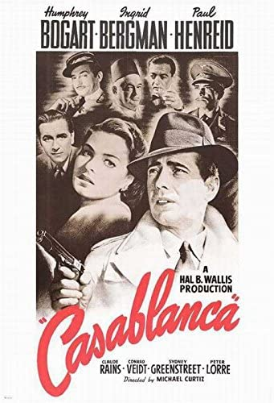

|
Title |
Released |
Runtime |
Genre |
Director |
Writers |
Imdb✮ |
|  |
Casablanca |
1942 |
102 min |
Drama | Romance | War |
Michael Curtiz |
Julius J. Epstein, Philip G. Epstein |
8,5 ✮ |
| |
Mr.Nobody |
2009 |
141 min |
Drama | Fantasy | Romance | Sci-Fi |
Jaco Van Dormael |
Jaco Van Dormael |
7,8 ✮ |
 |
Pulp Fiction |
1994 |
154 min |
Crime | Drama |
Quentin Tarantino |
Quentin Tarantino, Roger Avary |
8,9 ✮ |
 |
The Silence of the Lambs |
1991 |
118 min |
Crime | Drama | Thriller |
Jonathan Demme |
Thomas Harris, Ted Tally |
8,6 ✮ |